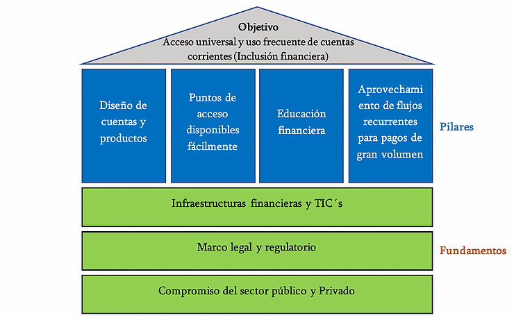
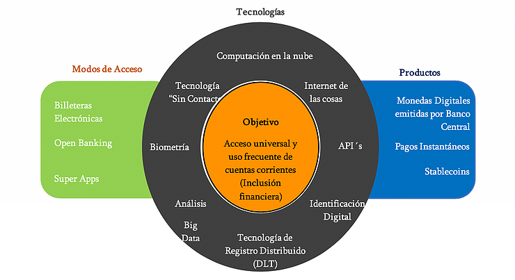
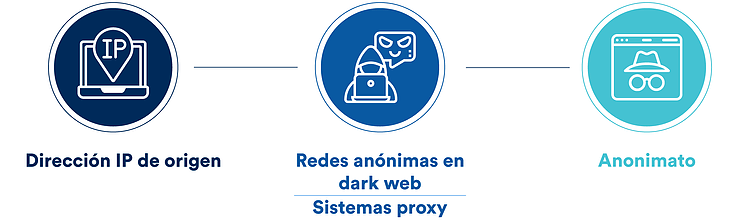
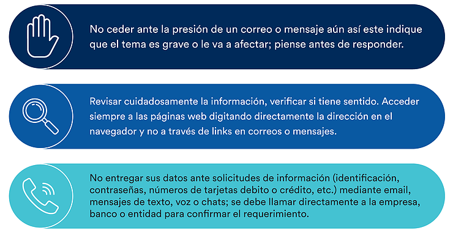
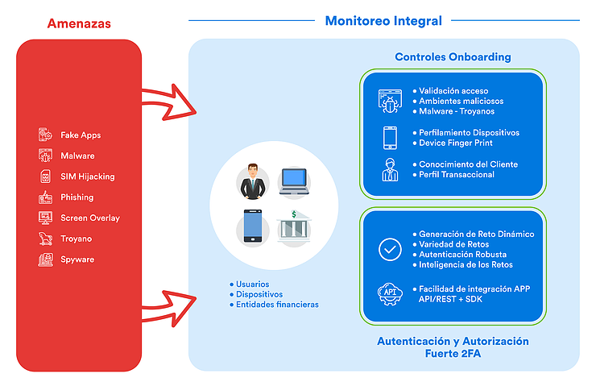
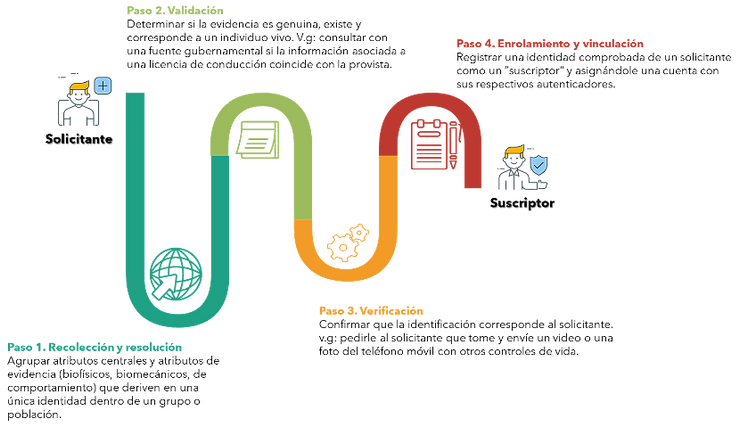
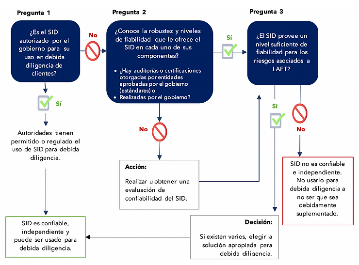
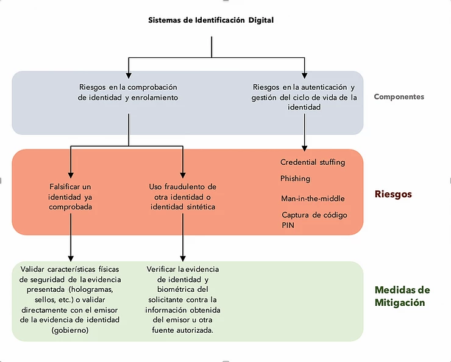
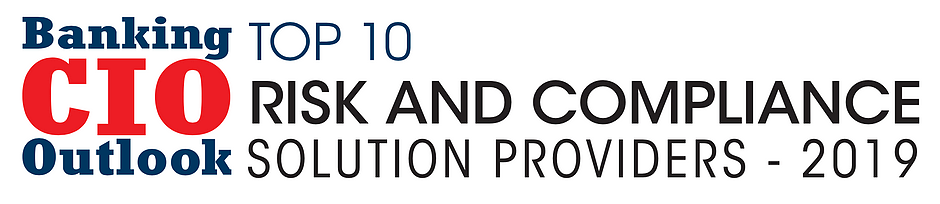
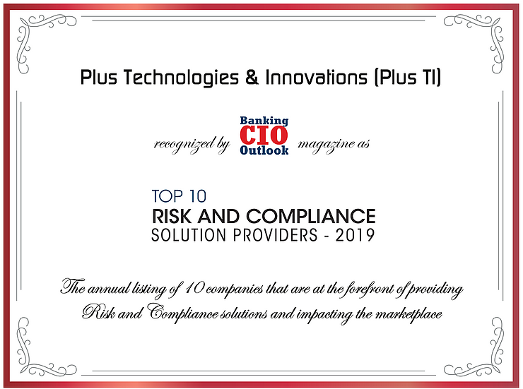

Para un mundo financiero mas seguro
Blog lo mas destacado
Nuevo Podcast: Mundo Financiero Seguro
Nuevo Podcast: Mundo Financiero Seguro
¡No se pierda el lanzamiento de Mundo Financiero Seguro, el podcast de Monitor Plus®!
Acompáñenos en este primer episodio para ajustar la visión al futuro y obtener la perspectiva de expertos de cómo abordar
la prevención de fraude integrando el control y supervisión múltiples sistemas desde una sola plataforma para una gestión eficaz.
Episodio 1
Orquestación: El Futuro de la Prevención de Fraude
Disponible en:
Spotify:
https://open.spotify.com/show/3iJiXARNu6Dx3BxasWFlwy?si=aomrQBdyREilnzgGqWvx1w
Apple Podcast:
https://podcasts.apple.com/gt/podcast/mundo-financiero-seguro/id1529375619?l=en
Deezer:
https://www.deezer.com/us/show/1678262?utm_campaign=clipboard-generic&utm_source=user_sharing&utm_medium=desktop&utm_content=talk_show-1678262
Resumen: El Aspecto de la Inclusión Financiera Relacionado a Pagos
Actualizado: 8 de may de 2020
Bajo el entendimiento de las cuentas corrientes deben permitir (i) a los usuarios finales atender la mayoría de sus necesidades de pago, (ii) almacenar de forma segura algún valor y (iii) servir de puerta de entrada para acceder a nuevos servicios financieros; todo para lograr una mayor inclusión financiera, el Comité de Pagos e Infraestructuras de Mercado y el Banco Mundial diseñaron en 2016 una guía compuesta por 7 principios regidos bajo la premisa: “la inclusión financiera comienza con los pagos”.
Aquella guía describía un marco de trabajo para sortear las dificultades encontradas en el acceso y uso de cuentas corrientes. Se recurrió a una serie de fundamentos necesarios para la operación de los sistemas de pagos y unos pilares catalíticos, siendo estos últimos los encargados de dirigir el acceso y uso de estos sistemas.

Desde entonces, el Comité y el Banco Mundial han continuado emitiendo nuevas herramientas y recomendaciones para alcanzar dicho objetivo. En el trayecto, la innovación tecnológica ha labrado los caminos hacia nuevas formas de inclusión financiara e impactado positiva y particularmente sobre los sistemas de pagos. Por tal razón, el Comité y el Banco Mundial consideraron necesaria y oportuna esta nueva entrega, donde se revisan aquellos desarrollos fintech enfocados hacía pagos, se analizan cómo estos pueden ayudar a conseguir el objetivo de inclusión financiera y ofrecen orientación adicional aplicando los principios de su primer informe a las iniciativas fintech actuales. A continuación, un resumen de lo detallado en el reporte:
Desarrollos fintech relevantes
Parten estudiando las iniciativas que repercuten sobre los pagos, describiendo su aplicación en nuevos productos, servicios y canales. La sección comprende el análisis de tecnologías sobre las que descansan nuevos productos y nuevos modos de acceso al sistema financiero.Es importante aclarar que estas tecnologías no se limitan a permitir novedosas formas de acceso a los nuevos productos, por el contrario, puede ser acopladas a productos existentes en diversas combinaciones. Y hasta inicializar pagos de nuevos productos mediante cuentas e instrumentos de pagos tradicionales.

La gráfica engloba muchos de los productos y servicios que son fácilmente identificables por los lectores de este artículo: tecnología blockchain, el desbloqueo facial de dispositivos, tarjetas de acercamiento, aplicaciones multifunción como WeChat, modelo de redes neuronales, análisis en tiempo real, etc. Sin embargo, se estaría logrando el objetivo contrario si estos desarrollos acentúan la brecha entre personas incluidas o excluidas financieramente. No se debe olvidar que el objetivo es alcanzar usuarios finales que el sistema financiero tradicional no cobija ¿Cómo garantizar entonces que los desarrollos fintech no provocan el efecto contrario? El reporte revisa esta cuestión en términos de los pilares catalizadores.
Oportunidades y desafíos de los desarrollos de fintech para impulsar el acceso y el uso de cuentas corrientes.
Diseño de Cuentas y Productos de pago:u> Para este pilar se destaca la velocidad y disponibilidad generada por los servicios de pagos instantáneos, mismos que han permitido ejecutar operaciones a cualquier hora, cualquier día y casi que en tiempo real.Otras ventajas es la posibilidad de enviar solicitudes de pago en forma de recordatorio, dotar a los usuarios de un mejor control de sus finanzas al conocer inmediatamente la disponibilidad de fondos, también satisface las necesidades de aquellos financieramente desatendidos ofreciéndoles un sustituto cercano al efectivo. En los negocios, reduce el riesgo de reversar transacciones, así los comerciantes pueden liberar más rápido la mercancía o servicios y tener márgenes más altos al reducirse los costos por servicios comerciales. Por último, se reseña la no dependencia de toda la infraestructura que acompaña los sistemas tradicionales de pago.
Por supuesto, la rapidez es un atractivo para los defraudadores. Las estrategias de mitigación incluyen la imposición de umbrales para transacciones individuales, periodos entre la inscripción de un nuevo beneficiario y la habilitación para enviarle dinero, así como el uso de big data e inteligencia artificial para detectar operaciones fraudulentas en tiempo real.
El documento hace un recorrido similar al de los pagos instantáneos para demostrar el potencial que tiene el open banking para aumentar la utilidad de las cuentas corrientes; la simplificación de los procesos de debida diligencia en clientes mediante la identificación digital[1]; y el uso de las monedas digitales emitidas por los bancos centrales como medios básicos de pagos similar al efectivo pero con ventajas en materia fiscal; por último las súper aplicaciones cubren una amplia gama de necesidades de pago en la vida diaria de sus usuarios ( por ejemplo, boletos de transporte, reserva de hotel, restaurantes, citas y pagos).
Nótese que para muchos de los beneficios mencionados, como el de las super aplicaciones, es indispensable el acceso de los usuarios a Internet y un teléfono inteligente, por lo que la disponibilidad y la asequibilidad de la tecnología de la información y la comunicación desempeñan un papel fundamental. Es así como se articulan los pilares y los fundamentos.
Puntos de acceso disponibles fácilmente:
En este apartado se realiza un análisis de cómo los nuevos productos y servicios están reduciendo la demanda de efectivo y de puntos de acceso físicos. La mayoría de los bancos están migrando hacia la oferta de servicios digitales al tiempo que reducen su presencia física; incluso algunos son totalmente virtuales y no disponen de sucursales físicas en absoluto.Una cuestión paradójica de este asunto resulta del desuso del efectivo a causa de la digitalización. Aparentemente esto es lo que se quiere lograr, pero se corre el riesgo de que el efectivo sea totalmente desplazado y se termine excluyendo a personas mayores, con alguna discapacidad, migrantes indocumentados, personas en situación de pobreza o comunidades rurales de muchos servicios donde ya no aceptarán dinero en efectivo.
También se alude al hecho potencial que tienen las billeteras electrónicas en combinación con tecnologías sin contacto para ampliar el número de puntos de aceptación a costos más bajos.
Educación Financiera:
En este sentido una preocupación clara es que las capacidades digitales de las personas no siempre van al mismo ritmo de la innovación, esto generaría una brecha en cuanto al acceso. Por otro lado, el uso de herramientas de inteligencia artificial y machine Learning pueden ayudar en la concientización de los usuarios sobre las condiciones, riesgos y ventajas de cada producto, esto mediante consejos personalizados, incluso con voz y orientación sobre mejores prácticas financieras.Aprovechamiento de flujos recurrentes para pagos de gran volumen:
Tomando como ejemplo el considerable flujo de remesas internacionales, los desarrollo fintech pueden contribuir significativamente a la inclusión financiera, dado que vinculará tanto a emisores como receptores.También se discute la sinergia que podría lograrse entre los sistemas de trasporte y las billeteras electrónicas en combinación con tecnologías sin contacto. Cantidades considerables de población acceden a los sistemas públicos de transporte, los desarrollos fintech apuntan a incluirlos financieramente. Sin embargo, el Comité reconoce que el impacto sobre la inclusión financiera no es claro.
Consideraciones finales
El reporte termina abordando el rol de los 3 fundamentos básicos sobre el aprovechamiento de las oportunidades fintech y sus desafíos. En esta sección se ahonda en el papel de las autoridades internacionales, entes reguladores y gobiernos, donde se fomenta un sentimiento de cooperación, así como la necesidad de regulación e inversión, todo para soportar las iniciativas del sector privado y controlar muchos de los riesgos emergentes.Finalmente termina integrando de forma práctica los 7 principios emitidos en 2016 (pilares y fundamentos) bajo una perspectiva propia de la era digital.
El Fraude Digital en Tiempos del COVID-19
Actualizado: 6 de may de 2020
Además de las normas de salud (lavado de manos, distanciamiento social y aislamiento), una nueva norma de la pandemia debe ser la higiene digital: estar atentos y mantener cautela ante los ataques y fraudes en línea, los cuales han crecido exponencialmente debido a la necesidad de las personas de mantenerse en contacto con sus familiares, el aumento de compras online y el teletrabajo como herramienta de productividad, entre otros.
La Organización Mundial de la Salud (OMS) alertó en días recientes sobre este tipo de amenazas, indicando que los delincuentes se hacen pasar por este organismo internacional y fingen campañas de donación para obtener información privada y fondos en efectivo.
La tensión y circunstancias únicas de la pandemia han generado un ambiente de incertidumbre que es una oportunidad aprovechada por muchos delincuentes, quienes utilizan su creatividad para cometer fraudes por teléfono, correo electrónico, mensajes de texto o promociones en las redes sociales.
El Phishing
por correo electrónico siempre ha sido una técnica popular de estafa, pero los millones de correos falsos enviados durante la emergencia del COVID-19 son el mayor aumento en ataques en muchos años.Otras estafas basadas en correos electrónicos fingen contener información relacionada a la salud pública o asociada a la pandemia y piden hacer clic en un enlace. Sin embargo, estos enlaces son maliciosos y lanzan e instalan malware o troyanos en el dispositivo de la víctima que extrae nombres de usuarios, contraseñas de cuentas de email y cuentas bancarias, entre otra información. Con este robo de información consiguen suplantar a la persona y engañar a las entidades bancarias y de otros tipos (email, redes sociales, etc.)
Sin importar el tamaño de la inversión que se realice en seguridad informática, identificar estos casos es difícil debido a la complejidad de técnicas y herramientas empleadas para mantener el anonimato y evitar la detección, así como el uso de accesos desde redes anónimas en la dark web o sistemas proxy que ofuscan direcciones IP de origen.

Además, el teletrabajo (trabajo en casa) inhabilita las medidas de seguridad tradicionales que son usadas diariamente en las oficinas físicas de las empresas pues no necesariamente están disponibles en el domicilio de los trabajadores. Esto dificulta la protección de un personal completamente remoto sin adaptación y expuesto a un entorno complejo.
Recomendaciones para mitigar los riesgos de seguridad en esta compleja situación:
El usuario es la primera línea de defensa. Ante situaciones de incertidumbre, dudas o presión, no responda a requerimientos de información y consulte directamente con la entidad o persona para verificar la legitimidad de la solicitud.Se pueden aplicar los siguientes criterios:
- pare
- mire
- llame
 A pesar de que el usuario final esté consiente y atento de la seguridad de su entorno, hay situaciones que no son detectables a simple vista debido a la complejidad técnica del ataque. En este punto cobran relevancia las soluciones especializadas en detección de fraude digital para ayudar a las instituciones y personas en la contención del riesgo.
PLUS TI monitorea e investiga continuamente las tendencias actuales y emergentes de fraude digital con el fin de adaptar la evolución de las últimas tendencias en tecnologías de detección basadas en Machine Learning y conocimiento experto, al igual que variadas técnicas y herramientas, para proveer una detección óptima y acciones defensivas en tiempo real, de los cuales destacan:
- Controles de Onboarding digital.
- Conocimiento del cliente y entorno.
- Perfilamiento de dispositivos
- Integración de APP Móviles mediante SDK (detección de malware y troyanos).
- Fortalecimiento de los procesos de autenticación y autorización dinámica (2FA).
- Monitoreo integral de la sesión del usuario.
- Análisis del comportamiento transaccional.
- Monitoreo y contención en tiempo real.

Monitor Plus® DBFD™ (Digital Banking Fraud Detector) es una de las soluciones mas completas, robustas y escalables de detección de fraudes en entornos digitales que proporciona todos los elementos anteriormente descritos y aplica las mejores prácticas para la detección y contención de riesgos y ciberamenazas.
Sobre Criptoactivos y Controles
En anteriores entregas, ya hemos hablado de los enfoques empleados en distintas jurisdicciones frente al tratamiento de los activos virtuales. A la fecha, la adopción más popular es un enfoque basado en riesgo que impone requisitos a los proveedores de activos virtuales similares a los impuestos sobre el sector financiero (debida diligencia, licencia para operación, contabilidad, reportes de operación sospechosa). La completa prohibición de activos virtuales también ha mostrado ser una opción latente con menos dolores de cabeza para los reguladores.
Idealmente, un proveedor de activos virtuales debería aplicar todas las medidas preventivas contenidas en la Recomendaciones 9 a 21 dictadas por el GAFI. Lo mismo aplica para entidades financieras y no financieras que se vean envueltas en este mercado. A continuación se revisan algunos de los elementos menos obvios de dichas recomendaciones:
Transacciones Ocasionales
Además de aplicar la Debida Diligencia (DD) a todos los clientes habituales, también se requiere para aquellos ocasionales que transen montos en activos virtuales superiores a los 1000 Euros o Dólares en efectivo o mediante transferencias, donde haya sospecha de lavado de dinero o donde se presuma datos de identificación falsos. Por supuesto, el criterio de “ocasional” deberá ser determinado por cada entidad.Información de identificación y verificación
Usualmente se emplean identificadores como dirección física, fecha de nacimiento, número de identificación oficial, entre otros. No obstante, en este contexto urge la necesidad de información adicional que puede ir desde dirección IP con una marca de tiempo asociada, geolocalización, información del dispositivo, direcciones de billeteras virtuales, hash.Es altamente recomendable, pensar en opciones de identificación digital que cumplan con los criterios de independencia y confiabilidad propuestos por el GAFI en su guía sobre el uso de identidad digital.
Perfiles de Riesgo
Se debe construir un perfil a partir de la información obtenida para dirigir el enfoque basado en riesgo (mayor, menor escrutinio de transacciones o fin de la relación). A nivel de cliente es posible considerar la naturaleza y volumen de la actividad comercial, origen de activos virtuales depositados o bien, a nivel de segmento; clientes con volumen transaccional similar empleando un activo virtual específico. De cualquier forma, la actualización de estos perfiles debe ser periódica.Listas Negras
Debe tenerse presente que OFAC ya ha incluido direcciones de monedas digitales en la lista SDN. Esto significa un nuevo campo a considerar al momento de cruzar información, asignándole una importancia similar a la coincidencia con nombres. Además, los sujetos obligados podrían generar y compartir sus propias listas, por ejemplo, cuando algún participante se niegue a continuar operando por los requisitos de debida diligencia solicitados.Mantenimiento Registros
Los sujetos obligados deberán mantener registros de las operaciones e información de debida diligencia hasta por 5 años. Aquí, la información referente a la identificación de clientes y beneficiarios adquiere una importancia mayor en comparación al mercado financiero tradicional. No basta con conservar las claves públicas[1], direcciones o cuentas involucradas, no basta fiarse solo de los registros blockchain. Si bien, las autoridades pueden eventualmente rastrear transacciones hasta una billetera puntual puede que no se logre asociar fácilmente a una persona natural, por tal motivo es que la información adicional que conserven los proveedores de activos virtuales es necesaria para la vinculación con una persona real.Licencias
Países como Estados Unidos, Reino Unido y México poseen un marco legal que obliga licencias de operación para los participantes en el mercado de activos virtuales. Lógicamente además de aplicar para obtener el permiso, los sujetos obligados deberían verificar si su contraparte que envía o recibe cuenta con licencia de operación.Transmisión de Información
Los sujetos obligados en este mercado deben obtener, mantener y transmitir la información asociada a su contraparte sobre el originador y beneficiario de la transacción; así como abstenerse de procesar operaciones con información incompleta.Aunque el GAFI es tecnológicamente neutral presenta algunas tecnologías útiles al momento de conducir este requerimiento en tiempo real; se basan en el uso de las claves públicas y privadas propias de la criptografía: Conexiones SSL/TLS; Certificados X.509; API, entre otros.
Se escapan muchas aristas en el sistema de prevención que deben aplicar las partes obligadas, como la identificación y tratamiento de PEPs, el grado de debida diligencia aplicable, el monitoreo continuo, entre otros. Hemos decidido dejarlos de lado porque son los que mayor similitud tienen con el mercado financiero tradicional, resaltando en todo momento que no son menos importantes.
Guía de Identidad Digital del GAFI - Aspectos Relevantes
El creciente volumen de transacciones digitales, la ubicuidad de internet y la posibilidad de aplicar masivamente soluciones digitales motivó al GAFI a ofrecer una guía para lograr un mejor entendimiento de cómo los individuos están siendo identificados y verificados en la industria de servicios financieros digitales.
En este artículo se presentan sucintamente las consideraciones que plasmó el GAFI frente a los procesos de identificación digital en su guía emitida el mes de marzo y dirigida tanto al sector privado y público. Será imprescindible que el lector se encuentre familiarizado con Las 40 Recomendaciones del GAFI, esencialmente con la número 10.
Definiendo el concepto de Identidad
Para propósitos del GAFI, identidad se refiere a la identidad oficial. Esta es aquella basada en características de la persona que la hacen única en un grupo de población o contexto específico al tiempo que es reconocida por un estado para propósitos regulatorios y legales.La forma de probar la identidad oficial varía entre jurisdicciones pero, generalmente, depende de la emisión de algún registro, certificado o documento creado por un ente gubernamental, tal como la Cédula de Ciudadanía (Colombia) o Documento Nacional de Identidad (Argentina, Perú), y que es ampliamente aceptado por distintas agencias.
Sistemas de Identificación Digital
Procesar la identidad para fines de debida diligencia y posteriormente para todo tipo de movimientos electrónicos exige el uso de Sistemas de Identificación Digital (SID); estos emplean medios digitales para corroborar y probar la identidad oficial de una persona que se desenvuelve en un entorno on-line, con ciertos niveles de seguridad.Los SID involucran dos componentes básicos y un tercero opcional para su operación:
-
Componente 1: Comprobación de identidad y enrolamiento (con vinculación y credencialización inicial).
La comprobación de identidad responde a la pregunta ¿quién eres tú? y se refiere al proceso mediante el cual un proveedor de SID recolecta, valida y verifica información sobre una persona para finalmente establecer que se trata de una persona única dentro de un grupo de población o contexto específico. La siguiente gráfica ilustra las actividades al interior de este componente, van desde que el cliente es un aplicante hasta convertirse en miembro activo de la entidad (o suscriptor):
 -
Componente 2:> Autenticación y gestión del ciclo de vida de la identidad
Responde a la pregunta ¿eres el individuo con la identidad previamente verificada? En otras palabras, se trata de establecer si la persona que está afirmando una identidad, es la misma que inicialmente se enroló y a la que se le asignaron ciertas credenciales y autenticadores.
Por autenticadores se entiende a los factores que pueden ser usados para confirmar una identidad, son ampliamente conocidos en la industria de prevención del fraude y se dividen en tres categorías:
- De propiedad: claves criptográficas.
- De conocimiento: contraseñas, preguntas clave.
- Inherentes: biometría.
- Componente 3: Mecanismos de interoperabilidad y portabilidad.
La identidad portable significa que una credencial digital de identificación de un individuo pueda ser usada para probar la identidad oficial ante nuevos sectores, privados o gubernamentales, para acceder a nuevos servicios sin que estas últimas tengan que someter a un proceso repetitivo de identificación y verificación al cliente cada vez.
El GAFI resalta que parte del primer componente (la prueba de identidad y el enrolamiento) pueden ser digitales o físicos. Sin embargo, el resto de componentes como la credencialización, la autenticación y la portabilidad son siempre y necesariamente digitales para un SID.
Estándares GAFI y Procesos de Debida Diligencia
La Recomendación 10 requiere que las jurisdicciones impongan obligaciones sobre las entidades para que ejecuten procesos de debida diligencia usando documentos, datos o información de fuentes independientes y confiables. ¿cómo se relaciona esto en un entorno de identificación digital y qué rol cumplen los criterios “independientes y confiables”?En el contexto de la identificación digital, ser "confiables e independientes" significa que el Sistema de Identificación Digital (SID) utilizado para llevar a cabo la debida diligencia de clientes debe basarse en procesos y procedimientos tecnológicos con un adecuado gobierno, tal que proporcione resultados precisos con un nivel adecuado de confianza. De otro lado, significa que el SID cuenta con medidas de mitigación para prevenir los tipos de riesgos abordados más adelante.
Por supuesto, el enfoque basado en riesgo continúa siendo una directriz en el contexto de debida diligencia empleando identificación digital, tal como se viene trabajando años tras, por lo que el GAFI no plantea nada nuevo.
Un cambio detectado tiene que ver con la Nota Interpretativa de la Recomendación 10, que consideraba a las transacciones no presenciales (incluida la vinculación de clientes) como un ejemplo de circunstancias donde el riesgo LAFT podía potencialmente ser más alto.
Ahora el GAFI clarifica que en lo que respecta a identificación y transacciones que reposan sobre SID confiables e independientes, con medidas apropiadas de mitigación de riesgos, puede presentarse un nivel de riesgo normal o incluso más bajo. Esto sin duda es un cambio de posición frente al uso de tecnologías digitales.
En cuanto a la terciarización de procesos, el GAFI mantiene lo plasmado en la Recomendación 17, en ella se indican las condiciones que debe cumplir un tercero para proveer los servicios de debida diligencia a una entidad regulada, trasladándose casi íntegramente al contexto de identificación digital. Este hecho no es aplicable a las situaciones de outsourcing o relaciones de agencia, donde la Recomendación 17 no aplica y el GAFI lo deja bastante claro.
¿Cómo Identificar un SID confiable e independiente bajo un enfoque basado en riesgo aplicado a debida diligencia?
Las entidades reguladas (bancos, financieras, proveedores de activos virtuales, exchanges, otras) que estén en miras de emprender un Sistema de Identificación Digital para la vinculación de sus clientes y tratamiento de los actuales deberían cuestionarse lo siguiente. Beneficios y desventajas de la identificación digital
Los beneficios del uso generalizado de la identidad digital tienen alcances más extensivos que la mera industria financiera, pueden ser aplicables a servicios de salud, tramites gubernamentales, entre otros. En relación puntual a los estándares GAFI se tiene:-
Facilitar la identificación y verificación de los clientes en el proceso de on-boarding (reducción del error humano por ejemplo al comparar dos fotografías y la reducción en los juicios de valor que pueden derivar en discriminación)
-
Apoyar la debida diligencia continua y el escrutinio de transacciones durante la relación banca-cliente: todo ello al tiempo que se mejora la experiencia del cliente aumentando la retención del mismo.
-
Facilitar otras medidas de debida diligencia sobre el cliente.
-
Ayudar en la detección y reporte de transacciones sospechosas: la entidad regulada puede establecer si la persona accediendo a una cuenta y realizando transacciones hoy, es la misma persona que accedió a la cuenta anteriormente. Aún más importante, dota a la entidad regulada de información adicional como geolocalización, dirección IP, dispositivo usado, entre otras permitiendo alcanzar mayor robustez en el reporte de operación sospechosa.
Riesgos de la Identificación Digital
Muy cautelosos, el GAFI aclara que los riesgos considerados deben acotarse exclusivamente a los SID en el marco de la debida diligencia y que de ninguna forma se pretende establecer que estos son mayores o menores que los beneficios.La discusión se centra en dos de los componentes de SID: la comprobación de identidad y la autenticación. La siguiente gráfica sintetiza las previsiones del GAFI pero también incorpora juicios propios del autor.
 En general, son consideradas las amenazas que enfrenta la digitalización a nivel global. Se incluyen en la guía obstáculos de conectividad, fricciones con la regulación de distintos países, desafíos en cuanto a la protección de datos y privacidad, así como la posible exclusión de ciertos grupos poblacionales al acceso de tecnología digital. Llama la atención que el GAFI deja espacio para lo que denominan “Riesgos Desconocidos” dando a entender que se espera una mayor evolución de los SID y la aparición de nuevos actores que exploten vulnerabilidades aún inexistentes.
Por un Mundo Financiero Más Seguro


"Análisis y monitoreo avanzado, un sistema multipropósito, un producto que ensambla técnicas de Machine Learning y modelos expertos para ayudar a nuestros clientes a combatir el fraude."
- Giovanni Castellanos
En una breve mención, es de gran orgullo para Plus TI hacer público el reconocimiento que hemos recibido por la prestigiosa revista CIO Review como uno de los 10 principales proveedores de soluciones para riesgo y cumplimiento del 2019.
Sin duda alguna, este gran logro es resultado no solo de nuestra pasión, fé y esfuerzos, sino también del apoyo de colaboradores, familiares, socios de negocio y clientes que han depositado su confianza en nosotros.
Este año cumpliremos 17 años de trayectoria en la industria y es satisfactorio tener este reconocimiento como otro hito que nos recuerda que vamos por el camino correcto.
¡Por un mundo financiero más seguro!

La Amenaza del Phishing y sus Consecuencias
El cibercrimen es una industria de US$600 millones anuales que se proyecta en daños de US$6 trillones para el 2021 según datos de The Cybersecurity Hub. Una de las formas más comunes del este tipo de crimen es el phishing, una amenaza que finge inocuidad, pero representa el inicio del 91% de los ciberataques de acuerdo con datos de Digital Guardian.
El phishing es un método de ingeniería social utilizado para extraer información por medio del engaño y el uso de la tecnología para obtener acceso a aparatos, redes o servicios. Comúnmente finge elementos de confianza o autoridad, y generar credibilidad para enganchar a su víctima.
De acuerdo con la Universidad de Stanford, los criminales que utilizan métodos de phishing usualmente buscan claves, información financiera, robar identidades o dinero. Además, estiman que hay un 10% de probabilidades de que un mensaje de éstos sea exitoso ya que usualmente las personas caen por una ilusión de urgencia, deseo de complacer, ambición o avaricia, curiosidad, miedo o complacencia.
Esta amenaza no es nueva pues los primeros intentos conocidos enfocados en servicios financieros ocurrieron en el 2001 y la modalidad es conocida desde 1987. Tanto instituciones como individuos necesitan tomar conciencia de esta realidad y tratarlo como un riesgo, pues es una amenaza no solamente financiera, si no también reputacional e incluso legal.
Las personas individuales tienen propensión a ser víctimas de phishing al ser embaucados por medio de llamadas telefónicas o al hacer clic en enlaces engañosos que les redirigen a sitios web que han sido clonados, contienen información falsificada, o redirigen desde un sitio legítimo a uno fraudulento. De aquí resultan parte de las pérdidas monetarias por fraude de US$1.48 mil millones reportadas tan solo a la Comisión Federal de Comercio (FTC) de Estados Unidos en 2018 con un incremento de 38% sobre el año anterior.
Sin embargo, las instituciones y algunos individuos están expuestos al spearphishing, una modalidad enfocada a individuos o una compañía que aparenta provenir de una fuente oficial e incluye información específica para aumentar las posibilidades de éxito. De acuerdo con TechRepublic, una de las modalidades de spearphishing más comunes es el “fraude de CEO”, en donde se solicita información o transferencias monetarias emulando mensajes legítimos del CEO de la institución. McAfee Labs provee datos que indican que el personal de las instituciones es dos veces más propenso a ser atacado que la gerencia y también dos veces más probable de ser engañado.
Tanto instituciones como individuos deben generar conciencia respecto a este riesgo para disminuir sus probabilidades de éxito. Algunas recomendaciones para las instituciones son:
- Interesar e involucrar a los líderes de la institución.
- Concientizar en seguridad a los empleados desde el inicio de la relación laboral.
- Crear un plan formal de entrenamiento.
- Realizar entrenamientos con escenarios realistas.
- Resaltar la importancia de la seguridad en el entorno laboral y personal.
- Evaluar resultados de periódicamente.
- Comunicar resultados e información relevante.
- Continuar entrenamientos actualizados.